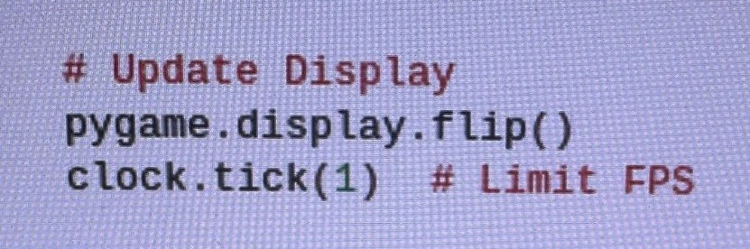
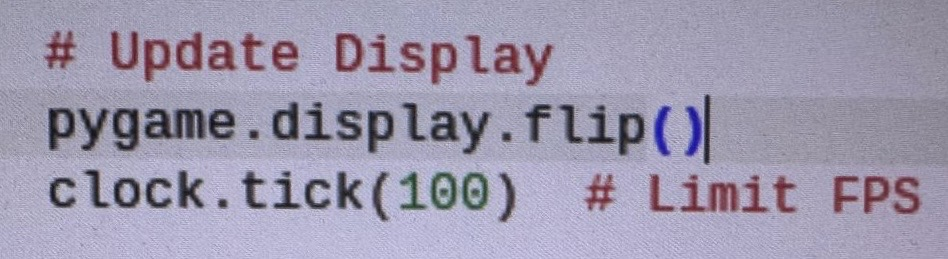
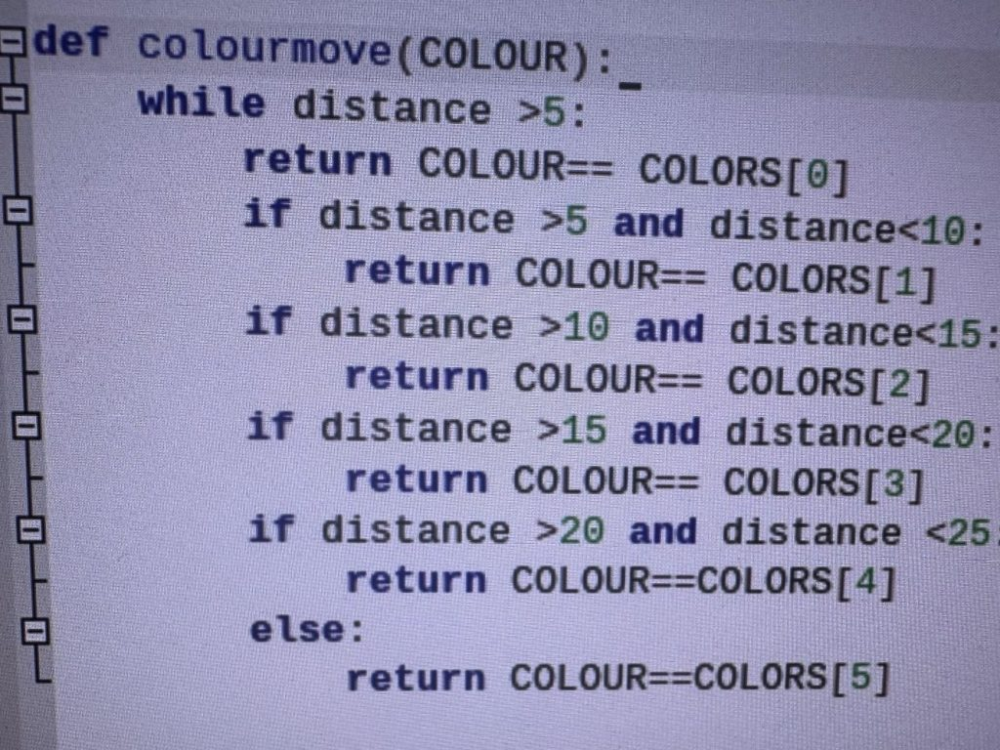
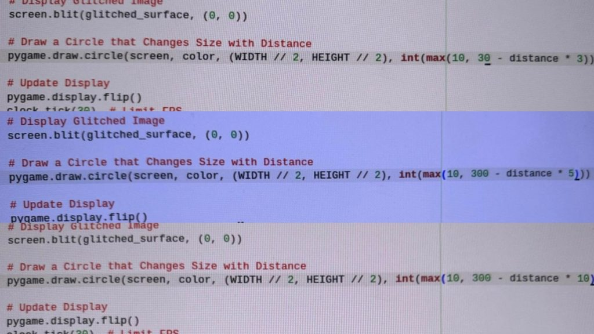
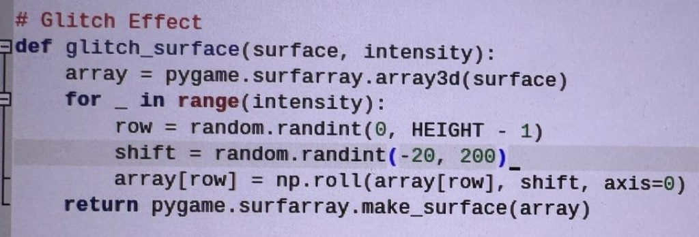
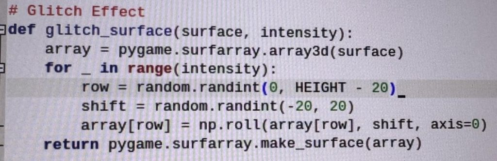

This week, I experimented with the interactive_sensor.py script that uses an ultrasonic distance sensor and Pygame to create a dynamic glitch art effect. I modified the script in several ways to better understand how distance measurements influence the visual output and to get more familiar with Python and GPIO operations on Raspberry Pi.
I tested the following modifications:
- Changed clock.tick() to different frame rates (1 FPS and 100 FPS) to observe how speed impacts the visuals.


- Wrote a custom function colourmove(COLOUR) to change the color dynamically depending on distance ranges.

- Adjusted the circle size calculation formulas:
300 – distance * 5
300 – distance * 10
30 – distance * 3

- Modified the glitch effect’s randomness by changing the shift values in glitch_surface().
Example: shift = random.randint(-20, 200) for a stronger glitch.
Also adjusted the row selection range: random.randint(0, HEIGHT-20).


What I Learned
- Frame rate control: By changing clock.tick(), I learned that higher FPS (like 100) made the glitch effect smoother but less noticeable, while very low FPS (like 1) made the screen updates extremely slow and choppy.
- Distance-based color control: Creating the colourmove() function taught me how to map sensor input to visual output through if-else conditions.
- Circle size mapping: I understood how the visual elements can scale non-linearly with sensor distance. For example, using distance * 10 made the circle shrink much faster compared to distance * 3.
- Glitch randomness: Increasing the shift value in the glitch function created more chaotic and dramatic visual disruptions, while smaller shift ranges kept the visuals more subtle.
Observations
- Very Close Distance (2–10 cm):
- High glitch intensity.
- Color switched frequently (based on colourmove() function).
- Circle size became very large or even reached the maximum.
- Medium Distance (10–50 cm):
- Moderate glitch effects.
- Colors changed less often.
- Circle sizes were medium.
- Far Distance (50–400 cm):
- Minimal to almost no glitching.
- Color defaulted to white (as per original code).
- Circles became very small.
Questions Answered
- What happens if intensity is negative?
If intensity becomes negative (without the max(1, …) safeguard), the glitch function would either crash (due to invalid loop count) or cause no glitch effects, because the range in for loop would be invalid.
2. How does the glitch effect change with distance?
The closer the object, the higher the intensity of the glitch effect (more row shifts happen), resulting in a more chaotic, “broken” appearance. As distance increases, glitch effects become milder and the image stabilizes.
Reflection
This project has truly enabled me to understand how to convert real-time inputs from the physical world, such as distance, into visual changes in the digital world. At the same time, I have gained more solid practical experience in setting up GPIO pins, reading sensor data, and presenting this data in creative ways.
In the future, I intend to further expand this project. For example, I want to add sound effects based on distance changes, or make multiple different shapes appear on the screen and change as objects move.
interactive_sensor.py script:
interactive sensorDownload